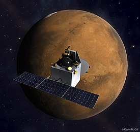

Mission objectives
The primary objective of the mission is to develop the technologies required for designing, planning, management and operations of an interplanetary mission. The secondary objective is to explore Mars' surface features, morphology, mineralogy and Martian atmosphere using indigenous scientific instruments.
The main objectives are to develop the technologies required for designing, planning, management and operations of an interplanetary mission comprising the following major tasks:
- Orbit manoeuvres to transfer the spacecraft from Earth-centred orbit to heliocentric trajectory and finally, capture into Martian orbit
- Navigation in all phases
- Maintain the spacecraft in all phases of the mission
- Meeting power, communications, thermal and payload operation requirements
- Incorporate autonomous features to handle contingency situations
Scientific objectives
The scientific objectives deal with the following major aspects:
- Exploration of Mars surface features by studying the morphology, topography and mineralogy
- Study the constituents of Martian atmosphere including methane and CO2 using remote sensing techniques
- Study the dynamics of the upper atmosphere of Mars, effects of solar wind and radiation and the escape of volatiles to outer space
The mission would also provide multiple opportunities to observe the Martian moon Phobos and also offer an opportunity to identify and re-estimate the orbits of asteroids seen during the Martian Transfer Trajectory. The spacecraft also provided the first views ever of the far side of Martian Moon Deimos.
Studies
In May–June 2015 Indian scientists got an opportunity to study the Solar Corona during the Mars conjunction when earth and Mars are on the opposite sides of the sun. During this period the S band waves emitted by MOM were transmitted through the Solar Corona that extends millions of kms into space. This event helped scientists study the Solar surface and regions where temperature changed abruptly.

Orbiter

Mars Orbiter Payload

PSLV
Lanuch
ISRO originally intended to launch MOM with its Geosynchronous Satellite Launch Vehicle (GSLV), but the GSLV failed twice in 2010 and still had issues with its cryogenic engine. Waiting for the new batch of rockets would have delayed the MOM for at least three years, so ISRO opted to switch to the less-powerful Polar Satellite Launch Vehicle (PSLV). Since it was not powerful enough to place MOM on a direct-to-Mars trajectory, the spacecraft was launched into a highly elliptical Earth orbit and used its own thrusters over multiple perigee burns (to take advantage of the Oberth effect) to place itself on a trans-Mars trajectory .
On 19 October 2013, ISRO chairman K. Radhakrishnan announced that the launch had to be postponed by a week for 5 November 2013 due to a delay of a crucial telemetry ship reaching Fiji. The launch was rescheduled. ISRO's PSLV-XL placed the satellite into Earth orbit at 09:50 UTC on 5 November 2013, with a perigee of 264.1 km (164.1 mi), an apogee of 23,903.6 km (14,853.0 mi), and inclination of 19.20 degrees, with both the antenna and all three sections of the solar panel arrays deployed. During the first three orbit raising operations, ISRO progressively tested the spacecraft systems.
The orbiter's dry mass is 482.5 kg (1,064 lb) and it carried 852 kg (1,878 lb) of fuel at launch. Its main engine, a derivative of the system used on India's communications satellites, uses the bipropellant combination monomethylhydrazine and dinitrogen tetroxide to achieve the thrust necessary for escape velocity from Earth. It was also used to slow down the probe for Mars orbit insertion and, subsequently, for orbit corrections.
Status
The chairman, ISRO, Shri A.S. Kiran Kumar releasing the Mars Atlas on the occasion of the completion of one year of Mars Orbiter Mission in Orbit, in Bengaluru. The Scientific Secretary, ISRO, Dr. Y.V.N. Krishnamoorthy
On 28 September 2014, MOM controllers published the spacecraft's first global view of Mars. The image was captured by the Mars Colour Camera (MCC).
On 24 March 2015, MOM completed its initial six-month mission in orbit around Mars. ISRO extended the mission by an additional six months; the spacecraft has 37 kg (82 lb) of propellant remaining and all five of its scientific instruments are working properly. The orbiter can reportedly continue orbiting Mars for several years with its remaining propellant.
A 17-day communications blackout occurred from 6 to 22 June 2015 while Mars' orbit took it behind the Sun from Earth's view.
On 24 September 2018, MOM completed 4 years in its orbit around Mars, although the designed mission life was only six months. Over these years, MOM's Mars Colour Camera has captured over 980 images that were released to the public. The probe is still in good health and continues to work nominally.
On 24 September 2019, MOM completed 5 years in orbit around Mars, sending 2 terabytes of imaging data, and had enough propellant to complete another year in orbit.
On 1 July 2020, MOM was able to capture a photo of the Mars satellite Phobos from 4200 km away.
In October 2022, ISRO admitted that it has lost the communication with MOM in April 2022, when it faced increasingly longer duration eclipses, including a seven-hour long eclipse that it was not designed to withstand. ISRO said the spacecraft was likely out of propellant and not recoverable.
